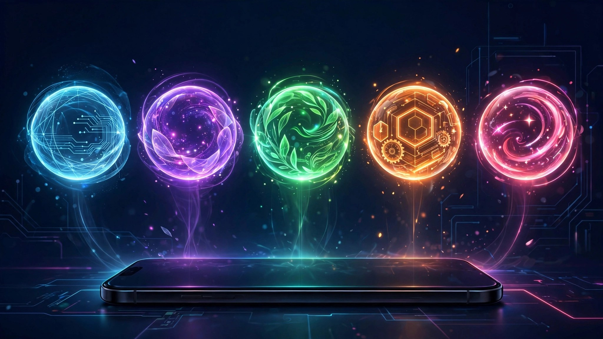

最近梳理了一场关于 AI Agent 的对谈，信息量很大。单看产品，五款 Agent 各有各的打法；但连起来看，我发现它们其实在回答同一个问题：用户凭什么把"替我办事"的权力交给你？
Agent 的本质就是授权与代理权。不给授权，它什么都做不了。五款产品，给出了五种不同的答案。
这是最让我意外的案例。一家去年才注册的公司，估值已经到 100 亿美金——对比一下，李飞飞的世界模型公司卖掉时是 82 亿。
它的打法反常识：不用下载 App。打电话、发短信、发邮件就是唤醒 AI 的入口，像用手机一样自然。
核心逻辑就一条：别跟用户谈复杂的上下文和权限管理。授权是逐步拿到的——先解决 5 毛钱的问题，再解决 5 块、50 块的，等用户真觉得省心了，才把信用卡交出来。数据很说明问题：用户每天增长约 10%，三周后约 40% 的用户愿意把信用卡交给 Agent。
这给所有做 Agent 的人提了个醒：技术人容易盯着架构酷不酷，却忽略用户的使用成本和教育成本够不够低。前台可以极简，后台再复杂都行，关键是站在用户那一侧。
现阶段我的建议是"最小必要原则"：先搞清楚一个 Agent 的上限、下限和局限，再逐步放权。
如果说 Instick 做的是"入口极简"，Dots 赌的是"入口统一"。
它的定位是全局 Agent 助理，有点像 Jarvis：作为唯一接口人帮你管理其他 Agent、查看进度，还自带 memory 系统，跨对话调用能力，不用自己在本地搭记忆体系。
这个思路很性感，但也有硬伤：手机端暂时看不到，文件管理偏弱。Personal Agent 的故事讲的是"24 小时在身边的助理"，移动端是必经之地，桌面端再强也只是半程。
马斯克这边的路子最有"组织味"。GrokBot 不像一个助理，更像一个工作小队：不同的 Agent 负责转写、脑洞、调研、开发等独立任务，Agent 之间可以通信，还能拉群协作。
有意思的是，它用 Chat 的形态做出了 Agent 的效果，而且主动性更强——会主动发起请求和确认，而不是等你下指令。
这指向一个下一阶段的方向：Agent 之间的组织协作。未来可能不是"一个人多个 Agent"，而是"一群 Agent 组成小队"替你干活。
Muse 瞄准的是个人生活场景：做规划、比价、订票。它的授权方式很直接——让用户授权登录京东、淘宝等账户，然后替你执行。
这个路径的聪明之处在于场景足够高频、价值足够直观。但挑战也明显：电商账户授权是最敏感的授权之一，用户凭什么信你？这又回到了 Instick 那道题：信任是逐步建立的，不是一次性索取的。
这是五款里最大胆的一个。Manus Q 给 Agent 配了独立身份——手机号、邮箱、银行卡，与用户身份隔离。
隔离恰恰是它的授权解法：因为身份独立，它可以获得更充分的授权，去做决策、去购买，而不用每次都来问你"可以吗"。
这是一种全新的授权与身份形态。如果说其他四款还在"怎么让用户放心授权"上做文章，Manus Q 直接换了个思路：让 Agent 自己成为一个可被授权的主体。
第一，Agent 正在从"步骤执行"走向"端到端任务交付"。大模型编程能力上来之后，用户不再想看它一步步操作，只想看到结果。
第二，授权设计比模型能力更重要。更好的授权、给定范围的授权、身份授权——五款产品五种解法，但没有一款敢跳过这道题。
第三，形态还在试错，别急着 All in。现在的阶段很像"百团大战"早期，产品形态和功能都在试。真正好的产品会自己找到用户；拖得足够久，有些学习成本可能自然消失。观望一下，不丢人。
最后留几个问题，也是那场对谈没聊透的：Personal Agent 和办公 Agent 到底是什么关系？未来是一个人多个 Agent，还是一个 Agent 包打天下？最小必要原则在产品里怎么落地？欢迎聊聊。
本文写于 2026-10-02。2026-10-05 刷注针对 Agent 产品上线时点 / 母公司代号 / 脱敏口径的最新口径补注，不重写 "五款 Agent 五种授权答案" 的核心洞察。
| 2026-10-02 原文口径 | 2026-10-05 最新口径 |
|---|---|
| Instick：估值 100 亿美金、不用下载 App、电话/短信/邮件入口 | 未变：Instick（100 亿美金估值）仍以"打个电话"为入口；用户日增 10% 在 10/5 时点未见反转 |
| OpenAI Dots：全局 Agent 助理、自带 memory 系统、缺手机端 | 未变：Dots 仍是 OpenAI 主推的全局入口；手机端在 10/5 时点仍未上线 |
| GrokBot：多 Agent 协作 / 主动发起 | 未变：xAI 的 GrokBot 仍是 Chat 形态做 Agent 的代表；马斯克/xAI 团队在 10/5 时点持续维护 |
| Muse：生活场景 / 京东淘宝授权 / 比价订票 | 未变：授权信任问题在 10/5 时点仍存 |
| Manus Q：Agent 独立身份 / 手机号 / 邮箱 / 银行卡 | 未变：Manus Q 仍是"独立身份授权"的代表样本；2026-10 团队仍在迭代 |
| 李飞飞世界模型公司 82 亿卖掉 | 未变：交易事实保持原口径 |
| "三周后约 40% 用户愿意交信用卡" | 未变：Instick 当周披露的运营数据；10/5 时点未见数据修订 |
| 五款 Agent 的趋势三条（步骤执行→端到端 / 授权设计 > 模型能力 / 形态还在试错） | 未变：2026-10 行业判断与原结论一致 |
| 脱敏口径：字节跳动 → O1 / 腾讯 → O3 / 阿里 → AL | 未变：本文未直接出现中资互联网公司名，仅在隐含行业格局描述中保留脱敏代号体系 |
| 模型代次 | 未变：本文不引用具体模型版本；Agent 编排与模型路由在 2026-10 仍是主线 |
结论保留：五款 Agent = 五种授权解法 + 三条趋势（端到端 / 授权设计 / 形态试错）—— 与 2026-10-02 结论方向一致，没有反转。
刷注口径：Instick / OpenAI / xAI / Manus 各自 2026-10 公开运营数据；中资互联网公司脱敏代号 O1 / O3 / AL 不动。